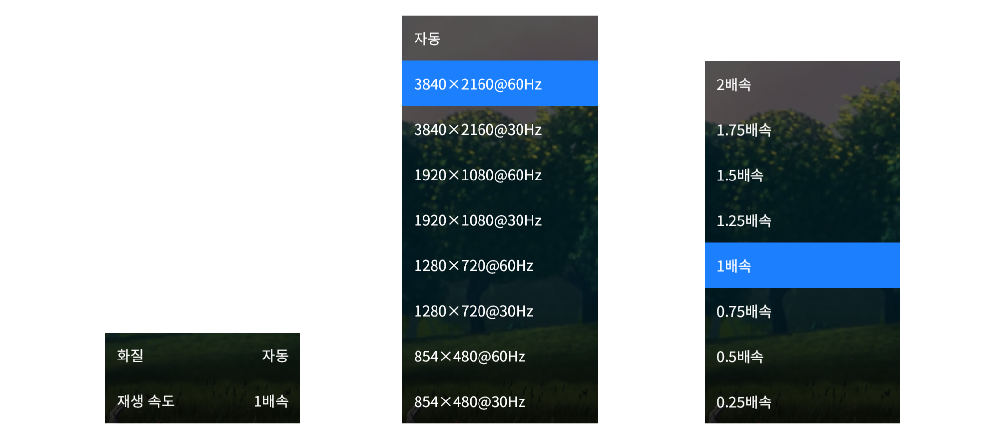

MyStream은 Go와 Vue.js를 이용해 구현한 오픈 소스 동영상 플랫폼입니다.
MyStream은 MPEG-DASH 기술을 통해 네트워크 환경에 맞춰 다양한 품질의 동영상을 스트리밍 가능합니다.
MyStream은 백엔드 서버, 프론트엔드 페이지, 인코더로 구성되어 있으며 각 요소는 로드 밸런서를 통한 스케일링이 가능합니다.
Dynamic Adaptive Streaming over HTTP는 HTTP를 이용한 동영상 스트리밍 기술입니다. DASH는 적응형 비트레이트 스트리밍 기술로 시청자의 네트워크 속도에 알맞은 품질의 영상을 동적으로 제공할 수 있습니다. DASH를 통해 전송되는 동영상은 짧은 간격의 세그먼트(segment)로 나누어 버퍼링하기 때문에 영상 전체를 다운로드하지 않고 실시간으로 재생 가능합니다. 이러한 특징 덕분에 DASH는 정적 동영상 컨텐츠와 실시간 라이브 방송 양쪽 모두에 활용 가능합니다.
DASH는 Apple의 HLS와 함께 HTTP를 이용한 스트리밍 기술의 양대산맥을 이루며, YouTube, Netflix 등의 스트리밍 서비스에서 활용되고 있습니다.
MyStream의 Back-end API 서버는 Go 언어와 Echo 프레임워크를 이용해 만들어졌습니다. MyStream API는 json 형식의 REST API로 제공되며 세션(session)과 같은 stateful한 기술을 배제하고, JWT(JSON Web Token) 등의 기술을 사용하여 stateless한 서버로 만들어졌기 때문에 로드 밸런싱을 이용한 스케일링이 가능합니다. 단, 웹소켓을 이용한 알림 서버의 역할을 하는 서버들은 스케일링 시 메시지를 중계해주는 메시지 브로커로서 redis를 사용해야 합니다.
데이터베이스는 MySQL 혹은 MariaDB를 사용합니다.
MyStream의 Front-end 웹 페이지는 Vue.js를 통해 만들어졌습니다. 웹 페이지는 플랫 디자인을 채용하여 현대적인 UI를 제공하고, 비트맵 이미지를 배제하고 벡터 이미지와 CSS를 활용하여 고해상도 디스플레이에서도 깔끔한 화면을 출력합니다.
MyStream의 인코더는 사용자가 업로드한 동영상 파일을 품질별로 나누어 여러 비트레이트의 영상으로 인코딩하고, 세그먼트를 나누어 DASH로 전송할 수 있는 영상 파일을 만듭니다. 개발 언어와 프레임워크로는 Back-end API와 마찬가지로 Go와 Echo를 사용하였습니다.
사용자가 동영상을 개시하면 Front-end 페이지는 오픈소스 재개 가능한 파일 업로드 프로토콜인 tus를 이용해 인코더에 업로드합니다.
동영상 인코딩에는 FFmpeg를 사용하고, DASH 파일 생성에는 Shaka Packager를 이용합니다.
인코더에서 처리된 영상은 저장소에 저장됩니다. 저장소는 파일 시스템, AWS S3, 혹은 커맨드를 이용한 사용자 정의 저장소를 사용할 수 있습니다.
파일 시스템이나 사용자 정의 저장소를 사용하는 경우 해당 파일을 HTTP를 통해 다운로드할 수 있도록 웹 서버를 구축해야하며, AWS S3를 이용하는 경우 해당 버킷을 퍼블릭으로 지정하고 정적 웹호스팅을 활성화해야 합니다.
MyStream의 레이아웃은 상단 바, 사이드 바, 콘텐츠 영역으로 구분됩니다.
상단 바의 좌측에는 사이트 로고가 있습니다. 사이트 로고는 변경 가능하며 설정된 로고가 없으면 MyStream 로고가 표시됩니다.
상단 바의 중앙에는 채널과 동영상을 검색할 수 있는 검색창이 있습니다.
상단 바의 우측에는 로그인하지 않은 상태에서는 로그인 버튼이, 로그인한 상태에서는 사용자의 프로필 사진이 표시됩니다. 프로필 사진을 클릭하면 사용자 메뉴가 표시되며, 이 메뉴를 통해 사용자 정보를 변경하거나 로그아웃할 수 있습니다.
사이드 바는 내 채널, 구독 채널의 목록을 확인하고 이동할 수 있는 내비게이션 바입니다. 또한, 새 채널을 생성하는 페이지로 이동하는 링크도 사이드 바에 위치합니다.
동영상 목록은 썸네일과 제목, 채널, 게시 시간의 정보가 그리드 레이아웃으로 표시됩니다. 대량의 동영상은 스크롤을 이용한 페이지네이션으로 나누어 로드합니다.
동영상이 표시되는 순서는 기본적으로 게시 시간을 기준으로 최신순으로 표시됩니다. 하지만 구독한 채널의 동영상은 우선순위에 가산점을 받아 일정 시간 늦게 올라온 비구독 채널의 영상보다 먼저 표시될 수 있습니다.
상단 바 혹은 사이드 바의 로그인 버튼을 클릭하면 로그인 페이지로 이동할 수 있습니다. 사용자 E-mail와 비밀번호를 입력하여 로그인합니다.
로그인 페이지의 회원가입 버튼을 클릭하면 회원가입 페이지로 이동할 수 있습니다. 회원가입 페이지의 폼을 작성하고 회원가입 버튼을 누르면 회원가입이 완료됩니다.
사이드 바의 채널 생성 버튼을 클릭하면 채널 생성 페이지로 이동합니다. 폼을 작성하고 생성 버튼을 클릭하면 채널이 생성됩니다.
채널 프로필 사진을 클릭하여 프로필 사진을 변경할 수 있습니다.
자신의 채널 페이지에서 새 동영상 버튼을 클릭하면 동영상 업로드 페이지로 이동합니다.
동영상 정보 폼을 입력하고 게시할 동영상 파일을 선택한 후 업로드 버튼을 클릭하면 업로드가 시작됩니다.
업로드가 완료되면 동영상 감상 페이지로 이동하지만 인코딩이 완료될 때 까지 영상은 표시되지 않습니다. 동영상 감상 페이지에 계속 머무를 경우, 인코딩이 완료되면 WebSocket을 통해 완료 상태를 수신하고 자동으로 동영상을 표시합니다.
동영상 감상 페이지의 상단에는 동영상 플레이어가 위치해있고, 그 아래로 동영상과 채널 정보, 공유, 감정표현 버튼, 댓글 영역이 있습니다.
플레이어의 하단에는 컨트롤 바가 있습니다. 컨트롤 바는 플레이어에서 마우스 커서를 움직이거나 일시정지 상태일 때 표시됩니다. 컨트롤 바의 상단에는 탐색 바가 있고, 좌측에는 재생/일시정지 버튼, 음소거 버튼, 볼륨 조절, 재생 시간이 있으며 우측에는 메뉴 버튼과 전체화면 버튼이 있습니다.
컨트롤 바 우측의 메뉴 버튼을 클릭하면 추가 메뉴가 표시됩니다. 추가 메뉴에서는 재생 화질과 속도를 설정할 수 있습니다.
동영상 감상 페이지의 공유 버튼을 통해 해당 영상을 공유할 수 있습니다. 공유 방식은 링크를 통한 공유와 HTML 태그를 통한 영상 삽입을 통해 공유하는 두 가지 방식이 있습니다.
자신이 소유하지 않은 채널의 페이지 우측의 구독하기 버튼을 클릭하여 채널을 구독할 수 있습니다. 구독한 채널은 사이드 바의 구독 채널 목록에 표시되며, 구독한 채널의 영상은 동영상 목록에서 우선순위에 가산점을 받아 구독하지 않은 채널의 영상보다 우선하여 표시됩니다.
API 명세 문서는 Github 위키를 참조하기 바랍니다.